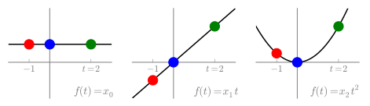
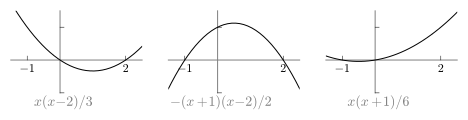
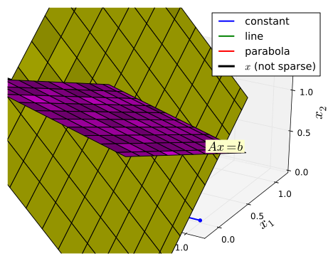
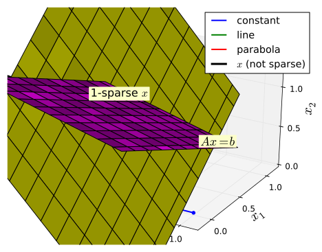

===Compressive Sensing===
* *Esc*: Close/open slides window.
* *Left/right*: Navigate slides.
* *Up/down*: Scroll main page.
* *Return*: Go to corresponding section in main page.
* Links navigate between slides and main page.
* Drag window anywhere on page.
===Polynomial Riddle===

* Three polynomial signals. I pick one.
* Which samples do you need to correctly determine the signal?
* Just red and
blue samples? All three samples?
===Overview===
* Promise of CS: transmit or store signals using fewer bits.
* Represent one signal according to two *bases*.
| Basis | Coordinates
| | 1. Sparsity | At least one zero coefficient
|
| 2. Sensing | At least one redundant coefficient
|
* Polynomial example, $f(t)=x_0+x_1 t+ x_2 t^2$:
| Representation | Basis | Coordinates
|
| 1. Sparsity
| $\{1,t,t^2\}$
| $[x_0~x_1~x_2]^T$ (one non-zero)
|
| 2. Sensing
| Lagrange
| Sample values
|
=== Solving the Riddle ===
* 3 samples unambiguously distinguish __any__ quadratic polynomial.
* 2 samples?
** blue and
green:
line and parabola agree for $x_1=2x_2$.
** red and
blue:
line and parabola agree for $x_1=-x_2$.
** red and
green: no two signals ever agree
(for any $x_0$, $x_1$, $x_2$).
* *No 1-sparse aliases using the red and
green samples*.
=== Significance of the Riddle ===
* Two samples is __compression__.
** Sparsity *enables* compression.
** Compression requires absence of K-Sparse aliases
* Periodic functions are (trigonometric) polynomials.
** Useful in applications.
** E.g., signals with sparse frequency spectrum.
* Two samples is __sub-Nyquist__
** But, sparsity is *severe* constraint.
* The key is a *pair of bases*: sparse and compressible.
=== Two Important Bases ===
(Slide 2 of 2)
==== Sensing Basis ====
* Coefficients (sensed) from measurements
* Prototype: *Lagrange* basis
** Coefficients are sample values.
** Basis polynomials unity at one instant, zero at others.
** Plot is for sampling instants $\{-1,0,2\}$

=== Sensing Coordinates ===
(Slide 1 of 3)
==== Constant ====
* Shown in black:
** $f(t)=1$
* Each sample value has an axis (see inset).
=== Sensing Coordinates ===
(Slide 2 of 3)
==== Constant & Line ====
* Shown in black:
** $f(t)=1$
** $f(t)=t$
=== Sensing Coordinates ===
(Slide 3 of 3)
==== Constant & Line & Parabola ====
* Shown in black:
** $f(t)=1$
** $f(t)=t$
** $f(t)=t^2$
=== Sparsity Basis Projections ===
* Project sparsity basis elements onto $b_0$,$b_2$ plane.
* Each projection has only two coordinates.
=== Aliases ===
* Project sparsity basis onto
$\color{red}{b_0}$,$\color{green}{b_2}$ plane.
* $\begin{bmatrix}1\\1\end{bmatrix}$, $\begin{bmatrix}-1\\2\end{bmatrix}$,
$\begin{bmatrix}1\\4\end{bmatrix}$
* Each projection is distinct.
* Need *two* projections to alias another.
* Impossible since *1-sparse*.
===Key equation: $Ax=b$===
* Columns of $A$ are *sparsity basis projections*
($\mathcal{SB}$-projections)
** E.g., $A=\begin{bmatrix}1&-1&1\\1&2&4\end{bmatrix}$ from last slide.
* $x$ = *sparsity coordinates*, $[x_0,...,x_N]^T$ (only $K$ non-zero)
* $Ax$ = combination of $\mathcal{SB}$-projections = *signal's projection* = $b$
* $b$ = *compressed sampling coordinates* ($b=[b_0,...,b_M]^T$)
* $Ax=b$ *under determined* (fewer rows than columns).
** Unique solution if no fewer than $2K+1$ columns of $A$ combine to zero
($2K+1=3$ above).
** i.e., $\mathrm{spark}(A) \geq 2K+1$
=== Reconstruction ===
(Slide 1 of 4)

=== Reconstruction ===
(Slide 2 of 4)

=== Reconstruction ===
(Slide 3 of 4)

=== Reconstruction ===
(Slide 4 of 4)
* Traverse solutions of $Ax=b$
* $\color{blue}{\ell_0}$-norm difficult
* $\color{red}{\ell_2}$-norm inaccurate
* $\color{green}{\ell_1}$-norm just right
=== Extensions ===
Bridging the gap between intuition and applications:
* the relationship between bases
* uniform sampling (i.e., if you can't choose sampling instants)
* the signal class (e.g., periodic signals)
* the effect of noise
* choosing bases for large-scale applications
* computational tools
Companion module
Compressive
Sensing Primer addresses these areas.
===References===
1. Bruckstein, A.M.; Donoho, D.L.; Elad, M.,
"[http://citeseer.ist.psu.edu/viewdoc/summary?doi=10.1.1.102.4697,
From Sparse Solutions of Systems of Equations to Sparse Modelling of
Signals and Images]," SIAM Review, Vol.51, No.1, pp.34,81.
1. Engelberg, S.,
"[http://ieeexplore.ieee.org/stamp/stamp.jsp?tp=&arnumber=6145261&isnumber=6145243,
"Compressive sensing (Instrumentation Notes)],"
Instrumentation & Measurement Magazine, IEEE ,
vol.15, no.1, pp.42,46, February 2012.